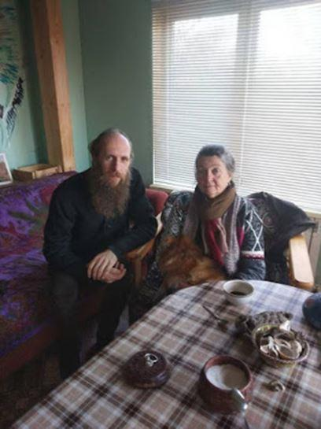
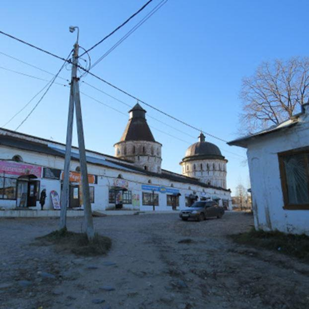

J'étais conviée, ce 11 novembre 2018, la liturgie dominicale du monastère saint Boris et saint Gleb, à Borissoglebsk. C'est à une heure de chez moi, pas loin de Rostov. Mais je n'accepterai plus de me déplacer le matin. Je mets des heures à émerger, je suis complètement au ralenti, me presser le matin, je ne peux plus, je commence même à comprendre ma tante Jackie qui ne prenait aucun rendez-vous le matin. Je suis devenue physiquement incapable de me presser. Déjà rien que pour me déplier et sortir de mon lit, ça me prend dix minutes. Et puis bien sûr, au moment de partir, je cherche mes clés, mes gants et la serrure du cadenas du portail est bloquée par le gel...
Par-dessus le marché, j'ai loupé l'embranchement de la route de Borissoglebsk, qui se prend, comme on dit ici, "à travers l'oreille gauche", il faut vraiment deviner qu'on doit tout à coup tourner à gauche sur une espèce de poche, et ensuite revenir en arrière prendre le passage à niveau et la route peu engageante qui le traverse.
Pourtant, par la suite, cette route s'avère très jolie, et elle était inondée de soleil, un soleil froid et pur d'hiver provençal, par jour de mistral.
Le monastère est absolument magnifique, la bourgade autour encore assez intacte, avec de jolies maisons typiques. Le monastère... pratiquement rien de postérieur au XVII° siècle, une architecture russe sans mélange, féerique comme à Rostov, qui, du temps de l'union soviétique, avait été complètement profanée, ce qui a laissé des traces regrettables, et deux bâtiments sont irrécupérables. Un tel joyau aurait dû être choyé par le gouvernement, par le peuple tout entier. C'est une architecture unique, qui n'a rien à voir avec la répétition idiote des modèles gréco-latins ni avec le béton-verre universel à qui on sacrifie tant de fric.
 Avec Vassili TomachinskiJ'étais tellement en retard que je craignais de ne plus trouver personne, mais les offices monastiques sont tellement longs, que j'ai eu droit à un bonus de trois quarts d'heure. Je suis entrée dans cette église (du temps de Vassili III, père d'Ivan le Terrible, début XVI° siècle) et je suis tombée dans un état second : tout était beau, délabré, mais beau, aucun détail de mauvais goût, des restes de fresques académiques, mais si passées, sombres et malmenées qu'elles en prenaient un mystère brumeux et tragique, bien que paisible, et cette iconostase de bois clair et chaud, récupérée quelque part, ces icônes disparates, mais toutes VRAIES, sincères et simples.
Et non seulement cette merveilleuse église restait noble et authentique, mais le chœur chantait des chants très anciens, sans fioritures, avec des voix naturelles, et non cette affectation académique pompeuse qui me crispe.
Au-dessus de l'higoumène en vêtements dorés, deux bannières détachaient leurs dentelles métalliques sur ce bois doucement ardent, et si usé, si maltraité lui aussi, et pourtant plus splendide, dans son héroïque, rustique et simple résistance, que tous les cacas boursouflés et dorés que j'ai vu défigurer jusqu'alors nombre d'églises « restaurées ». Tétanisée, j'ai dit à Vassili Tomachinski, qui m'avait invitée et accueillie : « Ici, c'est la Russie, c'est vraiment la Russie, c'est la sainte Russie. En haillons, et couverte de cicatrices, mais vraiment elle-même ».
Après l'office, je suis allée m'incliner sur les reliques des fondateurs du monastère, et sur celles de saint Irinarque, dont la célèbre procession de cinq jours a lieu tous les étés. Pour vénérer la châsse de saint Irinarque, il faut enfiler les deux croix de fer reliées par d'énormes chaînes qu'il portait en permanence. Une fois prosternée avec ça, j'ai bien cru que je n'allais plus jamais pouvoir me relever.
Au fond de l’allée, la cellule de Saint Irinarque
L'higoumène Jean m'a ensuite signifié qu'il voulait me faire un cadeau. Je l'ai suivi jusqu'à sa résidence, et en l'attendant, j'ai écouté Vassili Tomachinski me faire l'historique du monastère.
C’est là que vit le père higoumène
Je m'emplissais de toute cette grâce, de ces dentelles de briques, de ces arches, de ces imbrications de formes légères et si simples, si originales, de ces coupoles inégales, aux floraisons inaltérables, et les cloches sonnaient dans la lumière. Le père Jean est revenu avec un sac bourré de livres, il m'a fait Noël avant l'heure. Il y a là deux livres d'art sur le monastère et la procession, un gros livre intitulé "Sainte Russie, garde la foi orthodoxe", des brochures diverses sur le même genre de thème, des DVD, et deux paquets d'infusion d'épilobe ramassée sur le trajet de la procession, naturellement. « Vous n'avez pas encore participé à la procession ?
Ici, c'est le XVII° siècle, plus orné. Chaque carré est orné d'un carreau de céramique central
- Non, père, car j'ai beaucoup de mal à marcher... je voulais venir cet été, mais j'ai reculé à cause de cela, et je suis allée aux Solovki.
- Mais voyons, voyons! Il suffit d'y aller, les gens y vont tous, à n'importe quel âge et dans n'importe quel état, en patinette, en fauteuil roulant! J'ai connu un sportif qui avait eu un accident et tirait la jambe, quand il a bu l'eau de la source, il a oublié ses douleurs !
- Ah, alors... j'avais pensé la suivre à vélo, mais mon père spirituel m'a dit que ce ne serait peut-être pas très traditionnel...
- Venez en vélo, aucun problème, vous avez ma bénédiction... »
Cet higoumène m'a beaucoup plu, il semble très bon, plein d'humour, d'une sorte de tendresse malicieuse. Mais je n'ai rien compris à son sermon. Il marmonne et il est inaudible. Quand ses paroissiens le lui font observer, il répond qu'ils n'ont qu'à se nettoyer les oreilles.
Je suis allée ensuite avec Vassili chez Alexeï. La fille d'Alexeï vit à Paris, elle est mariée avec un journaliste français du Point (je n'ai pas fait de commentaires...) Il vit dans une isba bleue aux fenêtres sculptées. Nous avons discuté des problèmes avec le patriarche Bartholomée, des paroisses françaises, et j'ai raconté la visite d'Henri et Patricia et leurs impressions. « En réalité, a observé Vassili Tomachinski, malgré tout, il reste quelque chose de nous, de notre foi, et quand j'entends ce genre de témoignages, je me dis que nous avons sans doute encore quelque chose à apporter, un rôle à jouer...
- J'en suis convaincue. Un rôle eschatologique. »
Puis nous avons rejoint Lioudmila Pavlovna, que j'avais connue cet été et qui voulait déjà m'embarquer dans la procession (à laquelle je n'échapperai pas l'année prochaine...) C'est une femme intelligente et fine, elle fait partie de ces dames qui, avec l'âge, prennent un air de vieilles fées, comme l'artiste peintre Elena Vassilieva, et elle aussi y est allée de son cadeau: une icône ancienne, assez abîmée, que je n'oserais pas restaurer moi-même, mais je vais essayer de trouver quelqu'un...
Lioudmila Pavlovna a un poêle russe ancien couvert de céramiques. Chaque carreau est orné d'un losange bleu, mais ces losanges étant faits à main levée sont tous différents, sous leur apparente unité, ce qui leur donne une vie extraordinaire.
Après quoi, j'ai fait la connaissance d'Elena, qui est belge et vit sur place. Une petite dame toute ronde avec une canne, et l'air d'une moniale. En fait elle a la nationalité belge, mais ses parents sont des émigrés russes.
Elle m'a fait faire le tour de son domaine, un ancien monastère où quelques novices s'efforcent de restaurer les ruines qui subsistent. Elle prend cela très à cœur. Les églises étaient entourées d'un cimetière, dont il ne subsiste que deux pierres tombales, et où reposaient les gens du coin.
Pour faire un château d'eau, ce qui, si j'ai bien compris n'était pas autorisé, on a profité de son absence pour creuser dans ce qui était le cimetière, et revenant de Belgique, elle a trouvé devant chez elle des caisses d'ossements. Avec les paroissiens, elle a enfoui tous ces restes chrétiennement, et refermé la fosse avant le retour des ouvriers. « Ces maisons, par ici, me dit-elle, sont construites sur des ossements et beaucoup de pierres tombales ont été utilisées pour les fondations. » Cette façon de traiter ses ancêtres comme un tas d'ordures semblent l'émouvoir tout particulièrement.
Il y avait beaucoup d'étoiles, dans le ciel de Borissoglebsk quand je me suis décidée à rentrer, et un croissant orange au ras des forêts, comme sur un tableau de Vroubel, ou une illustration de Bilibine.
Aujourd'hui, j'ai reçu la visite de Sacha Joukovski et de son fils Timocha, en route pour leur datcha, à 40 km d'ici. Sacha est folkloriste, sa femme également, les enfants ont grandi là-dedans, ils ont un ensemble familial et se produisent tous ensemble.
Élevés sévèrement, dans la religion orthodoxe, la musique traditionnelle et le respect du pater familias, les enfants de Sacha sont très attachants, équilibrés, et toujours avenants.
Sacha m'a raconté que dans la région de Borissoglebsk, il y avait un village qui se mourait autour de son église délabrée, et un homme riche qui y avait ses racines, a commandé la restauration de l'église à un entrepreneur local. A l'issue de la restauration, il a posé un autre paquet de fric sur la table : « Bon, maintenant, il faut un prêtre pour cette église, pars étudier au séminaire.
- Qui ça, moi?
- Et qui d'autre? Tu feras très bien l'affaire. »
Devenu prêtre, l'entrepreneur a commencé à restaurer des maisons et avec l'homme riche, à remonter l'agriculture locale: bétail et même chevaux, ils ont à présent un centre d'hippothérapie et toutes sortes d'activités artisanales. Quand quelqu'un veut acheter dans ce village, l'administration locale dit : « allez voir le père Vladimir, et vous achèterez s'il vous le permet ! »
J'avais acheté des gâteaux du café français, et Timocha n'osait pas les goûter. Il en avait très envie mais semblait voir dans ce produit raffiné de la civilisation occidentale quelque chose de décidément trop recherché, trop sybarite. « Prend-en la moitié, je mangerai l'autre », lui dit son père.
Le garçon a mangé sa moitié avec délices. « Alors Timocha, ça te plaît quand même?
- C'est... c'est indescriptible! Mais justement, c'est trop ! C'est trop ! »
Partager cette page